|
|
|
When you search for words, the results are displayed in a concordance window.
For example, a search for all occurrences of the verb "love" in Shakespeare presents the following window:
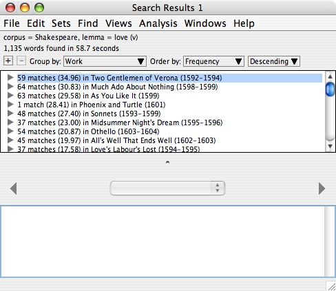
The top half of the window shows the search results grouped by work, in decreasing order by relative frequency per 10,000 words. We see, for example, that the Shakespeare work with the highest frequency of occurrences of the verb "love" is Two Gentlemen of Verona, with a raw count of 59 matches and a frequency of 34.96 per 10,000 words.
The top half of the window also shows the query that produced the result, the total number of matches found (1,135 in the example), and the total time it took to find all the matches (58.7 seconds in the example).
To see the matches in a group, expand the group:
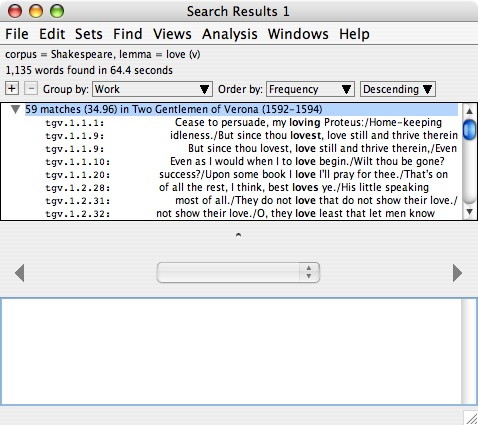
The matches in the group are displayed as a keyword-in-context (KWIC) list. The paths on the left (e.g., tgv.1.1.1) give the locations of the matches in the text.
If you wish to see more context in the KWIC lines, make the window wider:
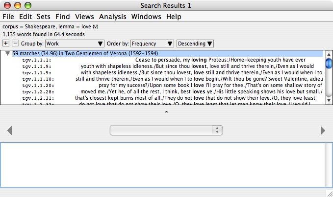
To see the full passage of text containing a match, select the KWIC line for the text:
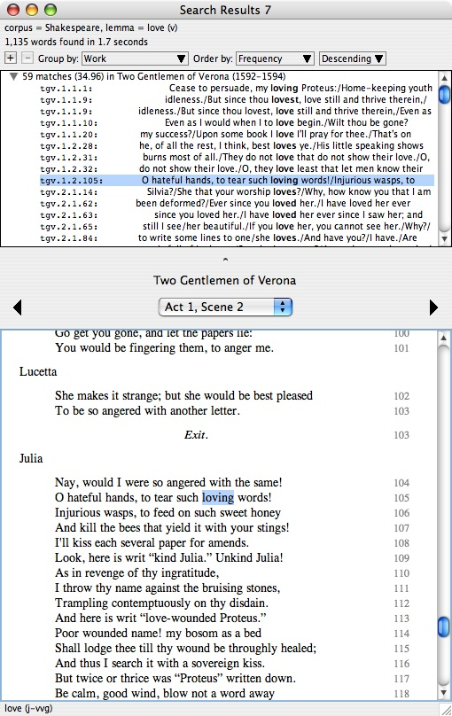
The bottom half of the window contains a work display panel which functions in exactly the same way as a work window. The matching word is positioned in the middle of the panel and is hilighted (selected).
To adjust the relative sizes of the top and bottom halves of the window, drag the split pane control between the two halves (the small circle immediately above the title "Two Gentlemen of Verona" in the example above).
If you are logged in, you can save the matches as a word set. Use the "Save as Word Set" command in the "File" menu.
The arrow key shortcuts for trees are very convenient for quickly advancing through all of the matches.
In our running example, suppose you started your search at some particular occurrence of the verb "love" in a work display window, say an occurrence in Act 2, Scene 1 of A Midsummer Night's Dream. You wish to compare the passage in which you noticed the occurrence of the verb "love" to all the other passages in Shakespeare which use the same verb. Position the original work window on the left, and position the concordance window immediately to the right of the work window. Then use the arrow keys to quickly move through all the matches. This "scholar's workbench" arrangement is shown below:
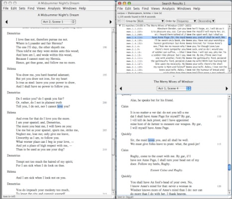
To change the way the search results are grouped, use the "Group by" popup menu at the top of the window:
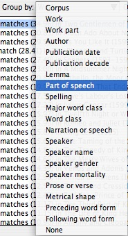
In this example, we are changing the grouping category to "Part of speech". When we release the mouse button, the display changes to:
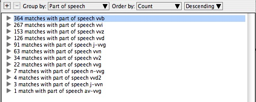
To change the way the groups are ordered, use the "Order by" popup menus. In the following example, we have grouped by work, in increasing order by publication date:
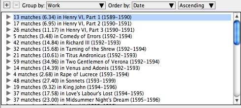
To group the results in multiple levels, use the plus and minus buttons. The plus button adds a new grouping level. The minus button removes a grouping level.
Example 1. Group by part of speech, then by spelling.
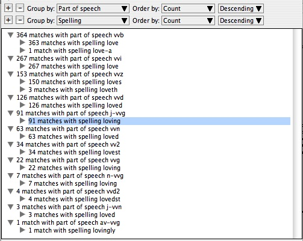
Example 2. Group by speaker gender, then by speaker name.
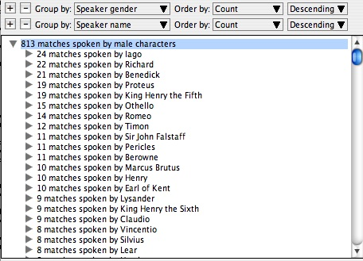
Example 3. Group by publication decade, then by work title.
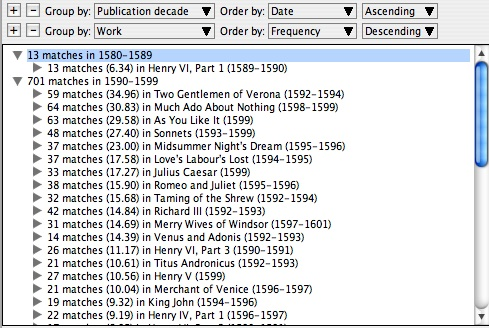
As our final examples of grouping, we complete two problems that we partially solved in the last chapter on Searching for Words.
Example 4. Find all 448 occurrences of Latin words in Shakespeare and group them by lemma to see that five of these occurrences are the Latin word "imprimis," and then look them up in the text of the three plays in which the word appears. We did the search in the last chapter. The last steps are to group the results by lemma, order them alphabetically, scroll to the group for the lemma "imprimis," then expand the group for "imprimis" to see the five matches:
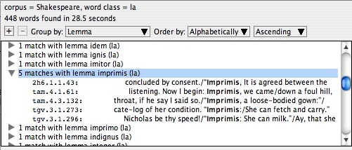
We see that the five matches occur in three plays: One match in The Second Part of King Henry the Sixth, two matches in The Taming of the Shrew, and two matches in Two Gentlemen of Verona.
Example 5. Count up the different ways Chaucer spells the adjective "young" in The Canterbury Tales. We did the search in the last chapter. The last step is to group the results by spelling:
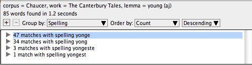
|
|
|